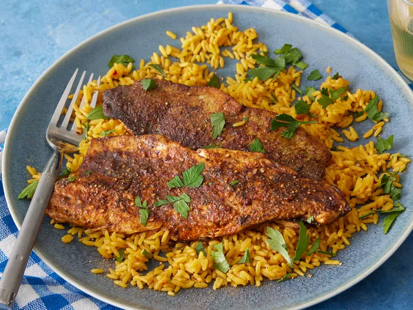

Blackened Fish Recipe

Description
Blackened fish prepared according to this top-rated recipe
is juicy, flaky, and full of spicy and smoky flavor.
Ingredients
- Paprika
- Dry mustard
- Cayenne pepper
- Cumin
- Black pepper
- White pepper
- Dried thyme
- Salt
Steps
- Gather all ingredients.
- Mix together paprika, dry mustard, cayenne pepper, cumin, black pepper,
white pepper, thyme, and salt in a small bowl.
- Heat a heavy cast iron pan on high heat until extremely hot,
about 10 minutes. While the pan is heating, pour 3/4 cup melted
butter into a shallow dish.
- Dip each fillet into butter, turning once to coat both sides.
- Sprinkle both sides of fillets with spice mixture; gently pat mixture onto fish.
- Working in batches, place fillets into the hot pan without crowding.
Carefully pour about 1 teaspoon melted butter over each fillet. Cook
until fish has a charred bottom, about 2 minutes. Turn fillets and spoon
about 1 teaspoon melted butter over each.
- Continue cooking until bottoms are charred, 1 to 2 minutes.
Repeat with remaining fish. Serve and enjoy!
Home